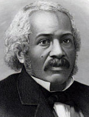

|

|

|
|
|
James McCune Smith was born in New York City, the son of freed slaves.
He received his early education at the African Free School, but even
with an excellent academic record, he was effectively barred from
American colleges because of his race. Smith entered Glasgow University
in Scotland in 1832, and earned three academic degrees, including a
doctorate in medicine. He also gained prominence in the Scottish
antislavery movement as an officer of the Glasgow Emancipation
Society.
Following a short internship in Paris, Smith returned to New York City
in 1837 and established a medical practice and pharmacy. His distinction
as the first degree-holding African-American physician assured him a
prominent position in the city's black community. He was involved in
several charitable and educational organizations, including the
Philomathean Society and the Colored Orphan Asylum.
Smith's intellect, integrity, and lifelong commitment to abolitionism
brought him state and national recognition. From the early 1840s, he
provided leadership for the campaign to expand black voting rights in
New York, although he initially refused to ally with any political
party. In the 1850s, Smith continued his suffrage activity through the
black state conventions. He eventually gravitated to the political
antislavery views of the Radical Abolition party, and received the
party's nomination for New York secretary of state in 1857.
As a member of the Committee of Thirteen, he helped organize local
resistance to the Fugitive Slave Act of 1850. He was ranked among the
steadfast opponents of the colonization and black emigration movements,
affirming instead the struggle for the rights of American citizenship.
Although committed to racial integration, he understood the practical
and symbolic importance of separate black institutions, organizations,
and initiatives. He called for an independent black press, and worked
with Frederick Douglass in the early 1850s to establish the first
permanent national organization--the National Council of the Colored
People.
Smith provided intellectual direction as well as personal leadership for
the black abolitionist movement. From his critiques of colonization and
black emigration in the 1840s and 1850s to his analysis of
Reconstruction in the 1860s, his commentary informed the debate on
racial identity and the future of African Americans. Smith's published
essays include two pamphlets, A Lecture on the Haytian Revolution
(1841) and The Destiny of the People of Color (1843). He wrote
several lengthy articles for the Anglo-African Magazine in 1859,
and also provided introductions to Frederick Douglass's second
autobiography and Henry Highland Garnet's Memorial Discourse
(1865). Although he never published his own journal, he assisted other
black editors in all phases of newspaper publishing. His letters to
Frederick Douglass' Paper often appeared under the pseudonym
"Communipaw." He contributed as a correspondent or assistant editor to
several other journals, including the Colored American,
Northern Star and Freeman's Advocate, Douglass' Monthly,
and Weekly Anglo-African. Smith's professional standing,
erudition, and community involvement made his life a triumph over
racism, and his name was frequently invoked by contemporaries as a
benchmark for black intellect and achievement. He died in New York
less than three weeks before the Thirteenth Amendment abolished
slavery throughout the United States.
Source: Colin A. Palmer, ed. Encyclopedia of African-American Culture and
History (New York: Macmillan Reference, 2006), 2493-95.
|